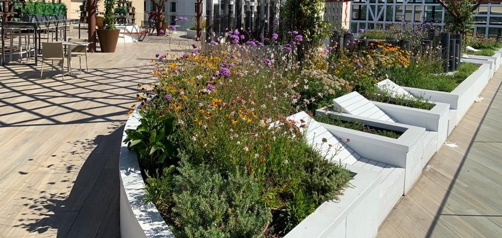

JARDINS · PLANTAS · PAISAGEM
Dar vida
ao seu espaço.
Construção e manutenção de jardins, plantas para interiores e projetos de arquitetura paisagista.
Horto da Circunvalação
O verde faz parte
do lugar.
Um jardim, um espaço de trabalho ou um evento. Explore os serviços do Horto da Circunvalação e encontre um ponto de partida para o que precisa.
Explorar os serviçosConstrução de jardinsManutenção de jardinsPlantas e decoração
Por onde começar
Um espaço.
Várias possibilidades.
Escolha a área que procura e veja o que partilhar para iniciar a conversa.
Ambientes
Dos jardins
aos interiores.
Serviços para empresas, instituições e particulares. A construção, a manutenção e as plantas respondem a necessidades diferentes; comece pela sua.
Explorar